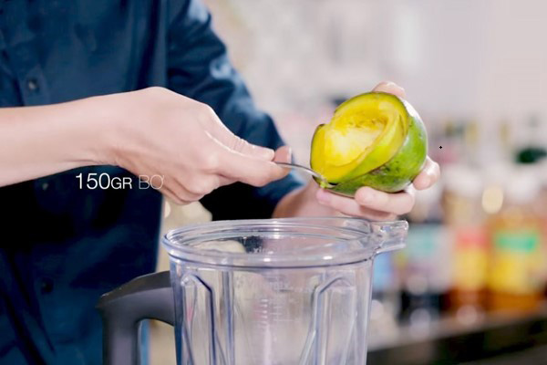
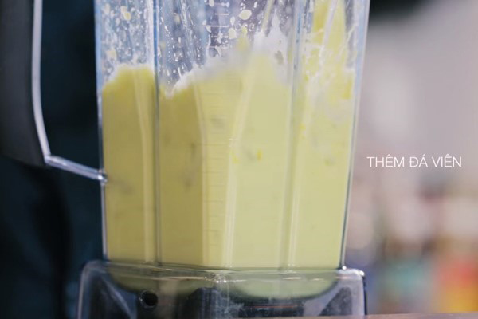
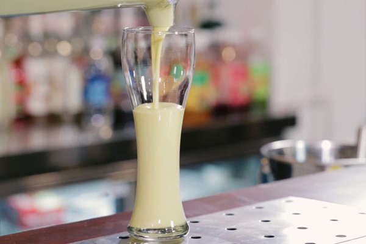

Sinh tố bơ là một lựa chọn hoàn hảo dành cho những ai đang muốn sở hữu vóc dáng săn chắc và cân đối. Tuy nhiên, bạn cần lưu ý lượng đường và sữa khi pha chế sinh tố. Sử dụng các loại sữa tách béo, giảm lượng đường để hạn chế năng lượng nạp vào cơ thể.
Nguyên liệu
Bơ sáp, bơ dẻo: 150gr (1/2 ly)
Đường: 20gr
Sữa đặc: 40ml
Sữa tươi: 20ml
Đá viên
Hướng dẫn làm sinh tố bơ
Bỏ vỏ và lấy thịt
Bước đầu tiên, bạn cắt đôi quả bơ, xoay bỏ hạt rồi tách phần thịt bơ. Lưu ý, không nên cạo sát vào phần vỏ bơ sẽ làm cho sinh tố bơ bị đắng. Ngoài ra, cách làm an toàn hơn đó là bạn lột vỏ quả bơ trước rồi sau đó mới tách hạt ra.
Xay làm sinh tố
Vệ sinh sạch sẽ cối xay sinh tố, lau thật khô để khi xay sinh tố sẽ không bị ám mùi trái cây khác và nước thừa sẽ không làm sinh tố bị tách lớp. Cách xay sinh tố bơ không bị đắng là bạn lần lượt cho thịt bơ, sữa tươi, sữa đặc và đường vào máy xay sinh tố.

Xay lần đầu tiên cho bơ nhuyễn và hòa quyện với nguyên liệu. Quan sát khi bề mặt sinh tố óng và có vệt sệt lại thì bạn tắt máy, thời gian khoảng từ 30 đến 40 giây.
Xay sinh tố bơ lần thứ hai, bạn cho đá viên trực tiếp vào cối xay. Sau đó chuyển tốc độ xay lớn để đá được xay thật nhuyễn, đếm khoảng 10 đến 15 giây chuyển lại chế độ nhỏ vừa và lắng nghe tiếng đá còn trong sinh tố hay không. Nếu đá chưa tan hết bạn tiếp tục xay khoảng 10 giây để sinh tố bơ không bị tách lớp.
Yêu cầu thành phẩm và thưởng thức
Hoàn thành bước cuối cùng làm sinh tố không bị đắng bằng cách đổ hỗn hợp sinh tố ra ly và thưởng thức hương vị béo ngậy, thơm ngon và chất lượng mà bạn đã làm.
